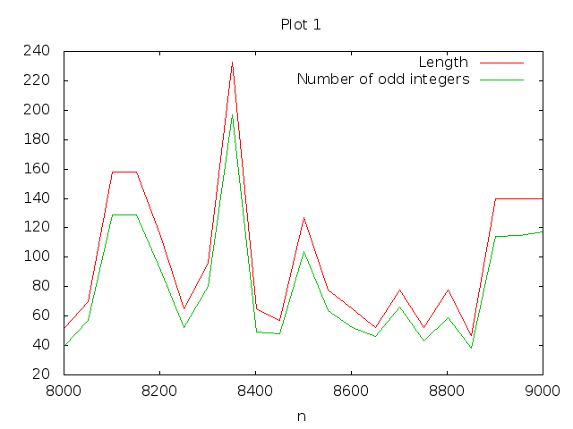

Please write (only if true) the honor
code. If you used any source (person or thing) explicitly state
it. You can find the honor code on the web page.
Overview
We continue with shell scripts and develop more scripting expertise.
Pre-tasks
Link your submission submitted in Lab 04.
Box 2D. Show a demo of "something related to your project" to
your TA. It might have, for example, 1-2 moving elements related to
your project.
Heads up! On Monday 8th September, there is no lab
due to midsem. However, I will ask you to submit all Box2D material
you have developed so far. This is a hard submission deadline and
will count towards your project points. Since you have midsem exams
that week, you might want to submit latest by Friday 5th September.
Read briefly about
hailstone
numbers. It's not necessary to understand this page completely
but compile the provided program runme.cpp as
g++ -std=c++11 runme.cpp -o runme1
The program runme takes an integer n and repeatedly
applies the function h(n) mentioned in the link above, until
the sequence reaches 1. It prints integers separated by
comma as follows
The length of the chain.
Number of even integers encountered (including n).
Number of primes encountered in the series (excluding n).
Sum of the primes encountered in the series (excluding n).
./runme 20 will print 7, 6, 2, 7
(20→10→5→16→8→4→2→1).
Outlab Tasks
We are going to create data and study the information therein.
Start by generating properties of the hailstone sequences with
values of n starting from 2 to 10,000. Let's create a script
generateData.sh which outpus data.csv. Each of the
9999 rows of the output will contain one entry with the input number
followed by the output of the runme.cpp program. For example for n=20 the row will be
20, 7, 6, 2, 7
Note: It usually takes around 40 seconds to create the data set.
We want to visualize the number of iterations it takes to
converge. Let's generate a graph with the bash script
generateGraph.sh
First, there is too much data. We want to eliminate many rows.
Create an awk
file filter.awk which when run as
awk -f filter.awk data.csv, results in every 50th row
from data.csv, i.e., for n = 51, 101, and so on.
Next, make the goal script
generateGraph.sh which, with gnuplot, produces a plot like this

Specifically, two graphs have been generated. The first graph has
n on the x-axis and the length of the chain on the y-axis. This
graph is titled "Length". The second graph has the number of
odd integers encountered on the y-axis, and is titled
"Number of odd integers". (Because of the legend and the color, the
identity of the graph becomes clear.)
Notes: n must be labeled on the x-axis of the plot and be in the
range [8000:9000]. Further,
generateGraph.sh should embed, and thus contain the awk command as
well as thegnuplotcommands. The script should also
remove temporary files if any.
Which number in the range [2..10000] is the most "stubborn", i.e.,
it takes the longest for the sequence to reach 1.
We have used the first two "columns" of data generated so
far. Let's plot a frequency chart of the "number of primes"
column like this
Recall that different n may encounter the same number of
primes. Create an awk file group.awk which when run on a
file zyx containing numbers in sorted order, outputs the
frequency of occurrences of each unique number. Thus
awk -f group.awk zyx has the following functionality: If
the input file contains 2 2 2 5 5 6 then the output is
2, 3 5, 2 6, 1
Now using the above format, write gnuplot commands to
plot the required graph in generateCountGraph.sh. The
graph must not contain any legend. The graph has
the number of primes (on the x-axis) and the number of
occurrences (on the y-axis) and both are labeled. Observe that
the frequency value is visually marked with +. Embed the
gnuplot commands inside the bash script, and use the awk
file group.awk in this script. You must not
create separate script files. Delete temporary files created if
any inside the script.
Create an awk script primeSumDetails.awk which when run
as
awk -f primeSumDetails.awk data.csv
outputs the average and the maximum of the sum of primes (last
column) in data.csv
Challenge question
Challenge questions should be attempted only after the regular
questions are solved successfully, and count towards a maximum extra
credit of 10%. If
you don't solve the challenge question, you can still get 100% in
this lab.
Crawl the web pages of the departments of Computer Science and Engineering, and Mathematics and
report, using a shell script, the number of faculty members in
each department. You may want to use tools like curl or
wget. Create a table which has the as the header rows
Department Name and Count. Your script should be
dynamic, i.e., as the web page changes, the numbers should get
updated.
Footnotes:
1If this fails, try
this g++ -std=c++0x runme.cpp -o runme
File translated from
TEX
by
TTH,
version 4.01. On 1 Sep 2014, 11:49.